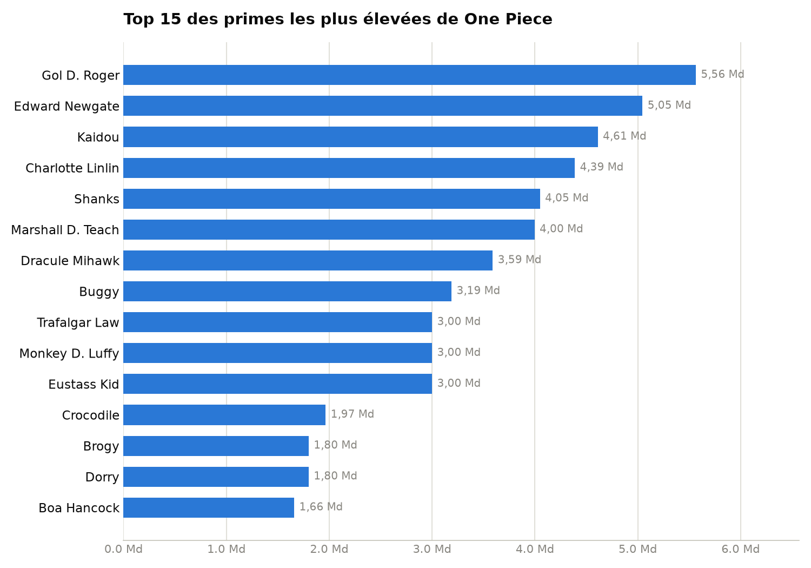
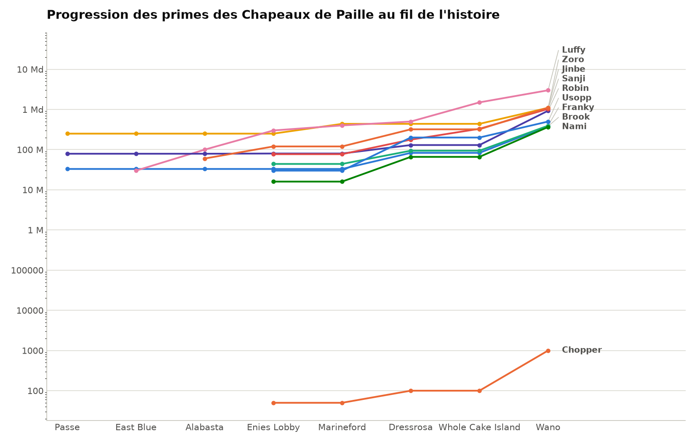

Analyse de données — pandas / matplotlib
Qui a la plus grosse prime de la série, et comment celle des Chapeaux de Paille a évolué au fil de l'histoire — deux questions, deux graphiques, construits à partir de données compilées à la main (aucune API n'existe pour ça).
Classement des 105 personnages nommés (équipages majeurs) dont la prime est connue avec certitude.

Chaque personnage suivi arc par arc, sur une échelle logarithmique (l'écart va de 50 Berrys pour Chopper à 3 milliards pour Luffy).

pandas.DataFrame.ffill() : une prime reste stable jusqu'au prochain changement connu.